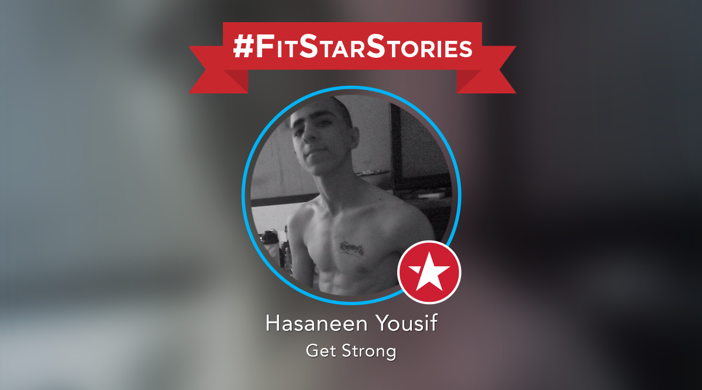
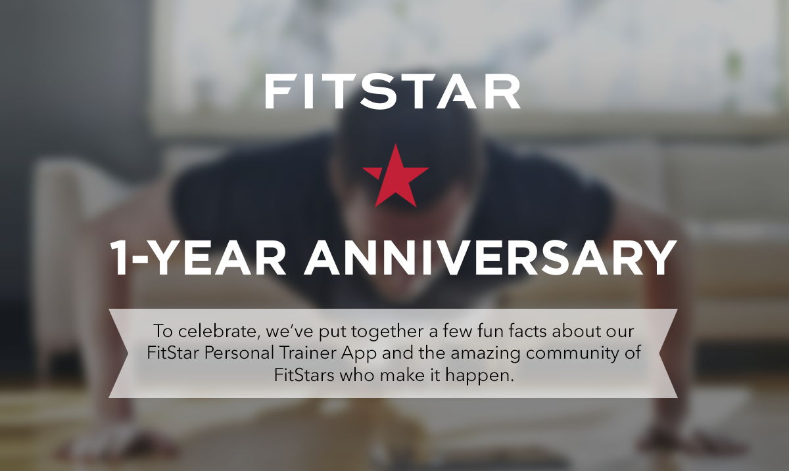
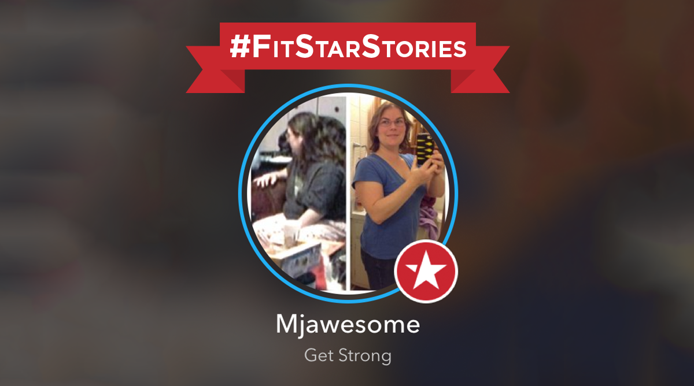
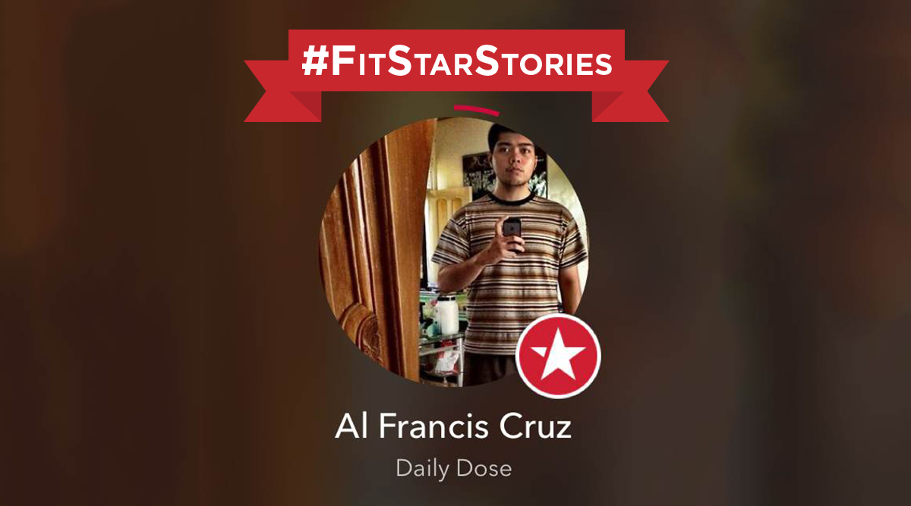
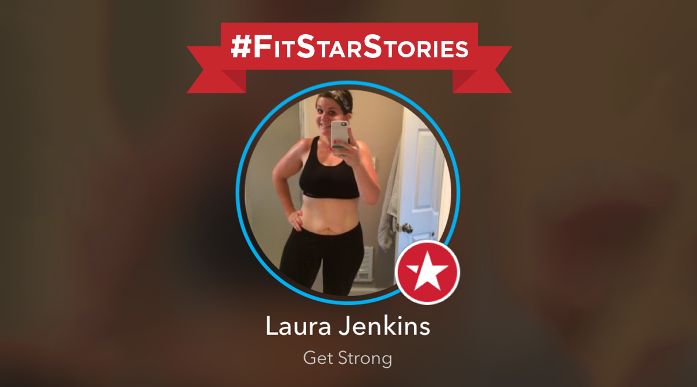
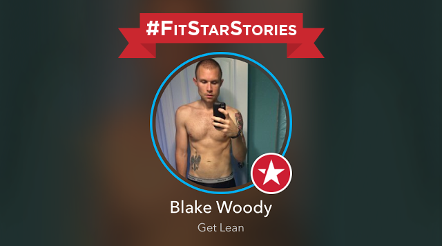

-
6 · 23 · 2014 | Inspiration
FitStar Stories: Raymond Calapatia
 We have more FitStar goodness to help motivate your Monday. Raymond from the Philippines has had some of the most stellar results to date. In four months, he’s lost 60 pounds and 10 inches around his waist – wowza! Thanks to FitStar, Raymond can also now do 100 pushups (up...
We have more FitStar goodness to help motivate your Monday. Raymond from the Philippines has had some of the most stellar results to date. In four months, he’s lost 60 pounds and 10 inches around his waist – wowza! Thanks to FitStar, Raymond can also now do 100 pushups (up...
Keep Reading
-
6 · 16 · 2014 | Inspiration
FitStar Stories: Hasaneen Yousif
 It’s been both fun and motivating for our team to hear stories from our users around the world. And this weeks FitStar is all the way from Iraq. In the few months Hasaneen has been using FitStar, he’s lost 5% body fat! He also credits FitStar with helping him gain more strength and...
Keep Reading
-
6 · 9 · 2014 | Inspiration
FitStar Stories: Laura Walsh
 Laura began using FitStar four months ago when she learned about it during her PE class. She has since traded in 11 pounds for a lot more confidence! Here are five facts you need to know about FitStar: Laura Walsh. 1) What’s your name and where do you live? Hi,...
Laura began using FitStar four months ago when she learned about it during her PE class. She has since traded in 11 pounds for a lot more confidence! Here are five facts you need to know about FitStar: Laura Walsh. 1) What’s your name and where do you live? Hi,...
Keep Reading
-
6 · 6 · 2014 | FitStar News, Inspiration
A Year of FitStar
 Hi All – Hard to believe, but it has been a year since we officially launched the first version of FitStar. It started with a simple idea: by making fitness more convenient, inspirational and personal, we could do a better job of getting people moving — whatever their current state...
Keep Reading
-
6 · 2 · 2014 | Inspiration
FitStar Stories: Sam Matrouh
 We heard about Sam’s “7 Day Challenge with FitStar” when he tweeted about it earlier this month. Being a shy and introverted person means he’s not as comfortable in the gym setting. We love that Sam gave FitStar a shot and asked him to share his experience. Spoiler alert: It’s been over 7...
We heard about Sam’s “7 Day Challenge with FitStar” when he tweeted about it earlier this month. Being a shy and introverted person means he’s not as comfortable in the gym setting. We love that Sam gave FitStar a shot and asked him to share his experience. Spoiler alert: It’s been over 7...
Keep Reading
-
5 · 26 · 2014 | Inspiration
FitStar Stories: Mandy Raper
 Since Mandy started using FitStar in December 2013, she has dropped two sizes and is both the smallest and fittest she’s ever been. Thanks to her FitStar workouts, Mandy also has more confidence than ever before – and can now do the incline press! Here are five facts you need...
Keep Reading
-
5 · 19 · 2014 | Inspiration
FitStar Stories: Al Francis Cruz
 Al Francis has been using FitStar for seven months and lost a staggering 56 pounds. The most exciting part to us here at FitStar? Before Al Francis started using our app, he almost failed his annual medical exam – but thanks to FitStar, his stats are normal now! Here are five facts...
Keep Reading
-
5 · 12 · 2014 | Inspiration
FitStar Stories: Laura Jenkins
 Laura has been using FitStar for five months and has lost 23 pounds and four dress sizes! But most importantly, she has gained confidence. Here are five facts you need to know about FitStar: Laura Jenkins. 1) What’s your name and where do you live? My name is Laura Jenkins and I’m from...
Keep Reading
-
5 · 5 · 2014 | Inspiration
FitStar Stories: Blake Woody
 We’re inspired every day by the work our FitStars put in and love hearing about how our app is changing lives for the better! So we launched #FitStarStories as a way to share motivating results with our entire community. Blake has been using FitStar exclusively for two months and has lost 20...
Keep Reading